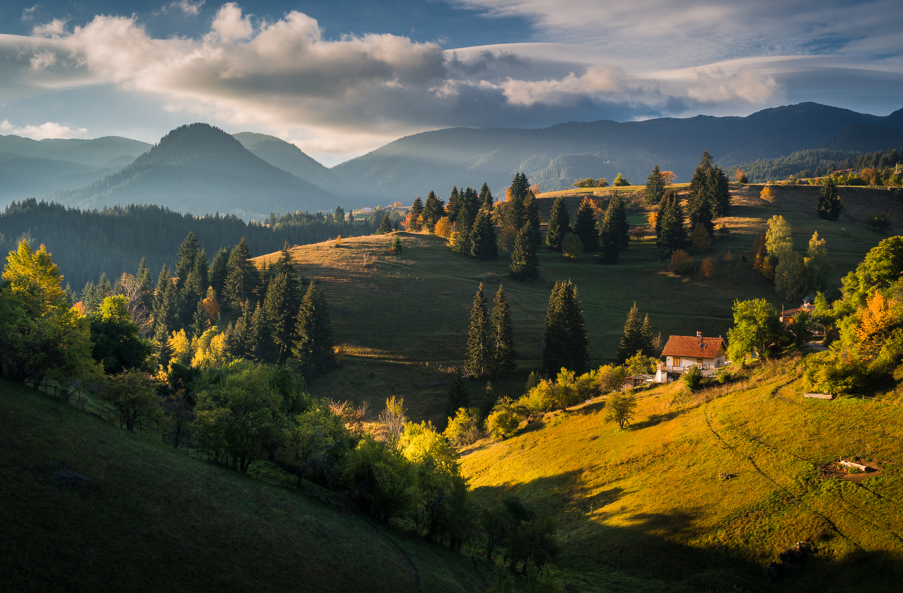
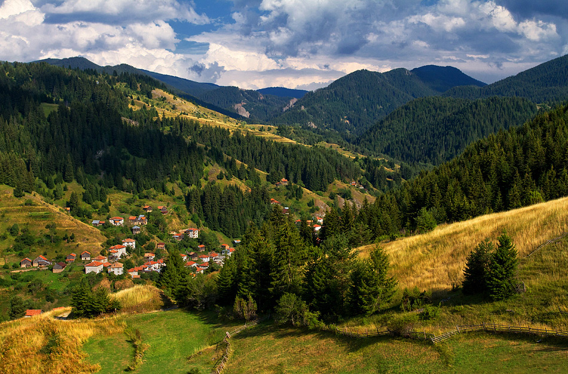
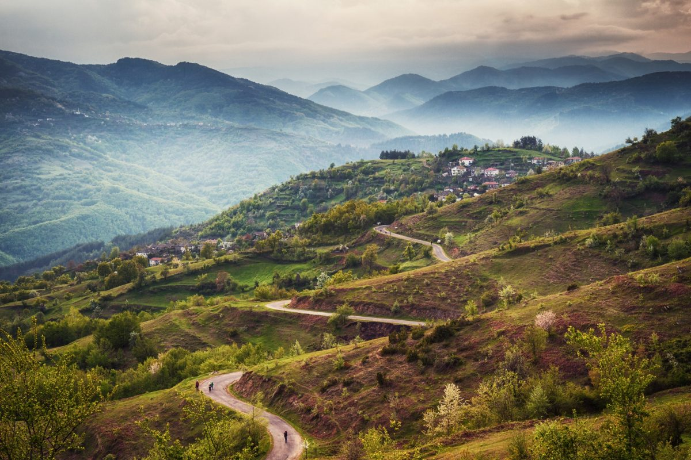

Родопи
Родопите е най-обширната планина в България и заема около една седма част от българската територия. Името на планината Родопи е с тракийски произход. Род-опа се тълкува като първоначално име на река със значение „ръждива/червеникава вода“.
Родопите са част от Рило-Родопския масив. Границата на Родопите с Рила и Пирин се очертава от долината на река Яденица, седловината Юндола, Аврамовата седловина, река Дрешенец и долината на река Места. Северните склонове на Родопите са значително по-стръмни от тези на юг, където планината плавно преминава в полетата на Беломорска Тракия.
По особености в релефа Родопите се делят на две части - Западни (високи) и Източни (ниски). Границата между тези две части се очертава от реките Каялийка и Боровица.
Западните Родопи обхващат територия от 8732 кв. км и по-високата част на Родопите. Средната им надморска височина е 1098 м, а най-високите точки са над 1800 - 2000 м.
Релефът в източната част на планината е предимно нископланински и хълмист. Средната им надморска височина е едва 320 м. Планинските дялове в тази част на планината също са обширни, но значително по-ниски.

Голямото климатично и почвено разнообразие обуславят голямо растително разнообразие в Родопите. На територията на планината са установени над 2000 вида висши растения, от които 90 са балкански ендемити и силно застрашени от изчезване видове. В ниските части на Източните Родопи горите отстъпват място на субсредиземноморските нискостеблени видове – вергилиев дъб, брекиня, габър, дива круша, драка, червена хвойна и др.
На височина над 800 м преобладават гори от обикновен горун, мизийски бук, габър, ясен, явор, шестил и др. В иглолистния пояс, който е развит предимно в Западните Родопи се срещат обикновен смърч, бял бор, черен бор, както и бук. На по-голяма височина преобладава храстовата растителност и алпийските ливади.